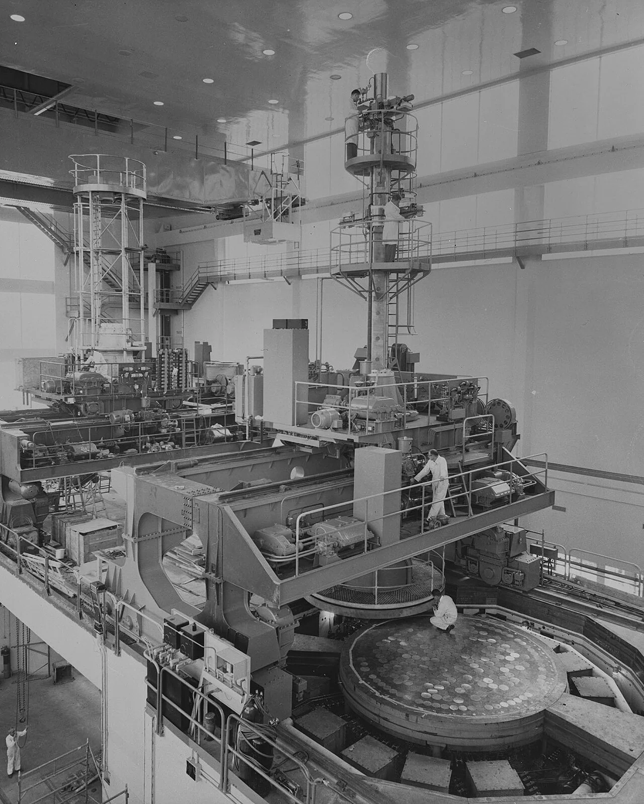
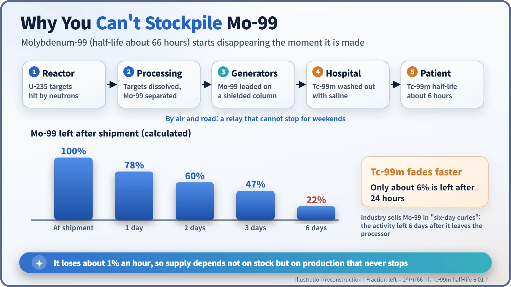
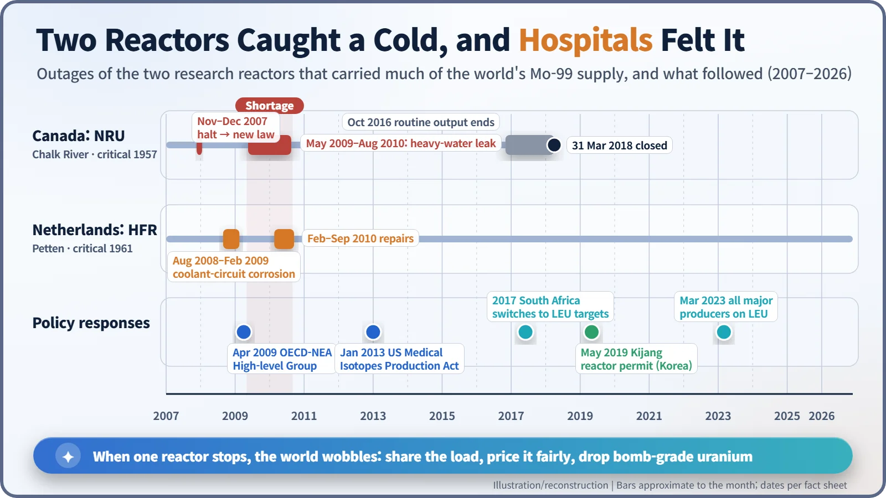
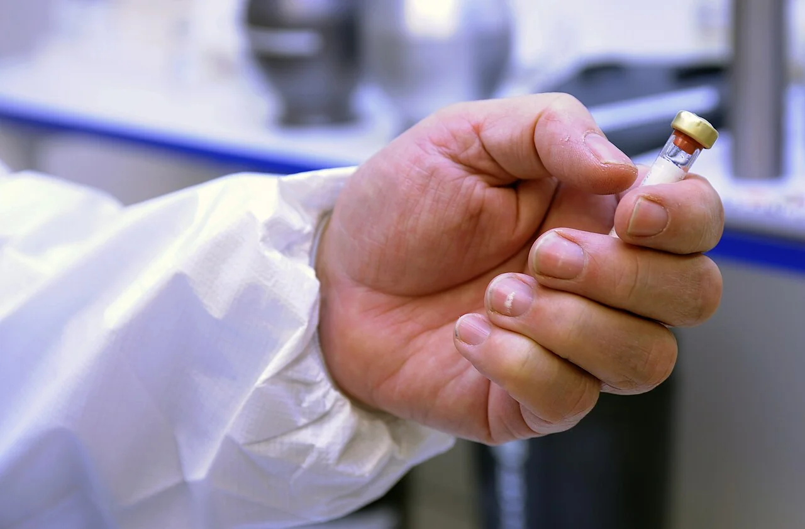

Nuclear History · 292
The Medicine You Can't Stockpile — The Mo-99 Medical Isotope Supply Crisis (2007–2010)
Molybdenum-99 loses about 1% an hour, so when two old reactors stopped at once, hospitals around the world felt it within weeks.
Most nuclear-medicine scans depend on technetium-99m, made from molybdenum-99 that decays by about 1% an hour and cannot be stockpiled. Between 2007 and 2010 outages at two ageing research reactors, Canada's NRU and the Netherlands' HFR, which together supplied about two-thirds of the world's Mo-99, left hospitals short. The crisis led to new rules on pricing and reserve capacity, the end of weapons-grade uranium in isotope production, and a search for new producers that continues as of November 2026.
One broken reactor, hospitals everywhere
In mid-May 2009, at the Chalk River Laboratories on the Ottawa River in Canada, a 52-year-old research reactor called NRU came to a halt. When engineers looked inside, they found corrosion near the bottom of the reactor vessel and heavy water seeping out at roughly 5 kg an hour. It was one broken reactor in one Canadian forest. Within weeks, hospitals around the world were postponing heart and bone scans. [1]

A parcel with a 66-hour half-life
About 80–85% of nuclear-medicine imaging uses a radioactive atom called technetium-99m (Tc-99m). Depending on who is counting, that adds up to 20–40 million procedures a year; in the United States alone it is more than 40,000 a day. [2] [5]
The catch is that Tc-99m has a half-life of about six hours, so it cannot be shipped far. Hospitals instead receive its parent, molybdenum-99 (Mo-99, half-life about 66 hours), packed inside a shielded "generator", and wash fresh Tc-99m out of it with saline as needed. But Mo-99 decays too, at roughly 1% an hour. Two days after shipment only 60% is left; after six days, 22%. The industry even trades Mo-99 in "six-day curies": the activity that will remain six days after it leaves the processing plant. You cannot build a stockpile, so production has to run every single week. [7]

Mo-99 is made by irradiating uranium-235 targets with neutrons in a research reactor and chemically separating the Mo-99 from the fission products. Only a handful of reactors did this on a large scale, and most of them were built in the 1950s and 1960s.
A first warning in the winter of 2007
NRU reached first criticality on 3 November 1957 and by the 2000s supplied around half of the world's Tc-99m. On 18 November 2007 it shut down for routine maintenance. The Canadian Nuclear Safety Commission (CNSC) then refused to let it restart, because an upgrade required by its licence, a backup power connection for the cooling pumps, had not been completed. As shortages spread, the House of Commons passed emergency legislation on 11 December allowing the restart, and NRU was running again on 16 December. The following January the commission's president, Linda Keen, was removed from that post, and the episode is still cited in debates about regulatory independence. [1]
Two veterans down at once
The real crisis came in 2009. The High Flux Reactor (HFR) at Petten in the Netherlands, critical since 1961, had already been shut from August 2008 to February 2009 because of corrosion in its primary cooling circuit. Then NRU stopped in May 2009 and stayed down until August 2010, about fifteen months, and in the middle of that, from February to September 2010, HFR went offline for repairs. Together the two reactors had supplied about two-thirds of the world's Mo-99. [2] [3]
Reactors such as BR2 in Belgium, SAFARI-1 in South Africa and OPAL in Australia stepped up production, but they could not fill the gap. Hospitals rescheduled scans or switched to other isotopes and to PET imaging where they could.

Three lessons from the shortage
The first lesson was about price. Governments had long covered the cost of running these reactors while isotopes were sold cheaply, so nobody had a reason to build new reactors or spare capacity. In April 2009 the OECD Nuclear Energy Agency (NEA) set up a High-level Group on the Security of Supply of Medical Radioisotopes (HLG-MR). It produced six policy principles, among them "full-cost recovery", so that prices reflect the whole cost of production, and paid-for "outage reserve capacity", so that the system can cope when one reactor stops. [6] [7]
The second lesson was about material. Most targets at the time used highly enriched uranium (HEU, 20% or more uranium-235, a proliferation concern). The US American Medical Isotopes Production Act of 2012, signed into law in early 2013, set out to phase out HEU exports for isotope production and to support domestic Mo-99 production. South Africa's NTP converted to low-enriched uranium (LEU) targets in 2017 and Curium in the Netherlands in 2018. When Belgium's IRE completed its conversion in March 2023, every major Mo-99 producer was making it from LEU targets. On the American side, the Secretaries of Energy and of Health and Human Services certified in December 2021 that enough Mo-99 was available without HEU, which triggered a ban on US exports of HEU for foreign isotope production. [4] [5]
The third lesson was about generational change. NRU ended routine isotope production in October 2016, stayed on as an emergency backup, and closed for good on 31 March 2018. The Netherlands is building PALLAS to replace HFR, the United States is backing new routes such as SHINE's accelerator-driven facility, and South Korea received a construction permit in May 2019 for the 15 MW Kijang research reactor near Busan. As of November 2026, when each of these will reach full production varies from project to project. [1] [3] [5]
Reactors are not only machines for making electricity. They are also the source of a medicine that cannot be stockpiled.
